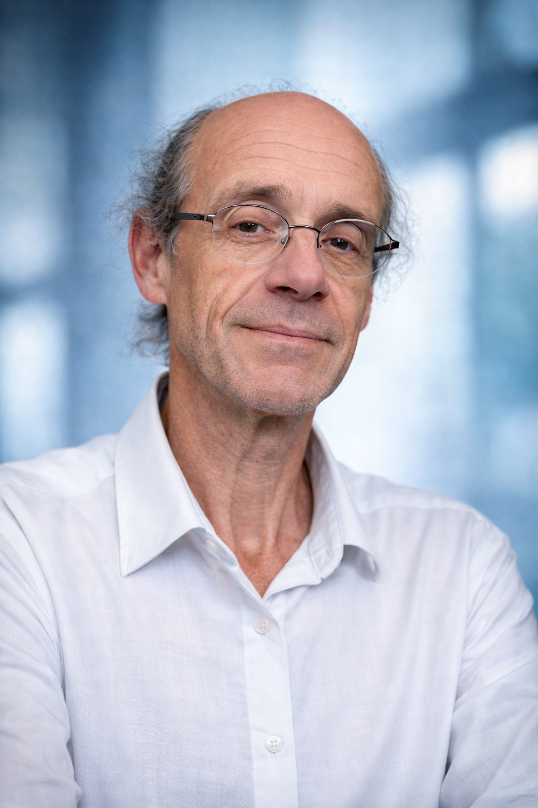

Je suis un dirigeant technique et architecte de systèmes complexes, avec plus de 25 ans d’expérience à la croisée de l’aéronautique, de la robotique, de l’embarqué critique, du logiciel et de la data.
Mon parcours s’est construit dans des environnements où la robustesse technique, la vision produit et la capacité à faire converger plusieurs métiers sont décisives. Chez SKF Aerospace puis Safran Electronics, j’ai développé une culture forte des systèmes critiques, de l’actionnement, de la validation et des arbitrages d’architecture en contexte industriel exigeant.
Chez EUVEKA, j’ai prolongé cette base en pilotant un produit robotique connecté de bout en bout, en reliant mécatronique, électronique, firmware, logiciel, cloud et IA dans une même trajectoire. Ce que j’apporte aujourd’hui à une entreprise, ce n’est pas seulement une expertise technique large, mais une capacité à donner de la cohérence, à structurer une feuille de route, à faire dialoguer les équipes et à transformer une technologie complexe en offre compréhensible, industrialisable et créatrice de valeur.
